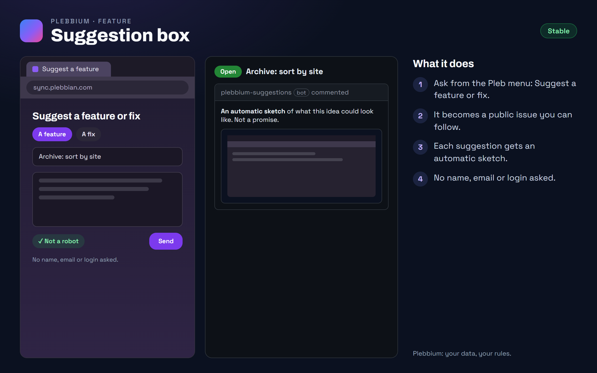

All features › Shipped › Suggestion box
Suggestion box
Stablesince 3612Ask for a feature or a fix from inside Plebbium: it becomes an issue on Plebbium's public GitHub, where you can follow it, and it gets an automatic sketch of what it could look like.

How to use it
- Pleb button › Suggest a feature or fix (or suggest in the Everything bar, or Plebbium settings › About).
- Write your idea. The page asks before adding your Plebbium version.
- Follow it on GitHub; an automatic sketch appears under it within a few hours.
When it arrived
156.0.8078.361222 Oct 2026 · Beta and Stable
The suggestion box.
Why it works this way
Public, so you can follow it
Suggestions are GitHub issues anyone can read, so you can see what others asked for and what happened to yours.
Nothing about you
No name, email or login is asked, and nothing typed can ping anyone.
Kept clean
A bot check and limits per connection keep spam out.